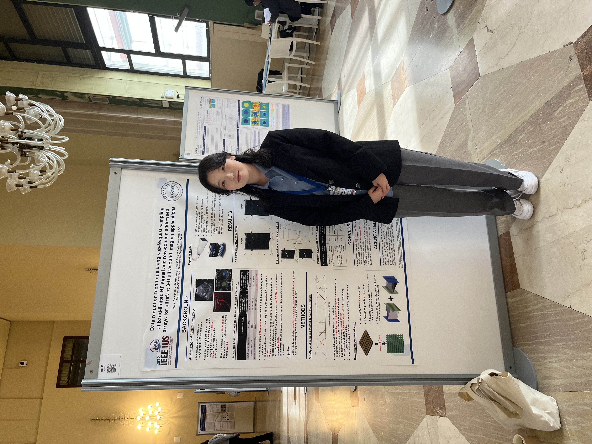
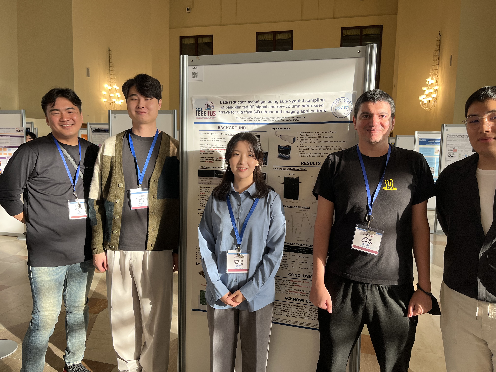
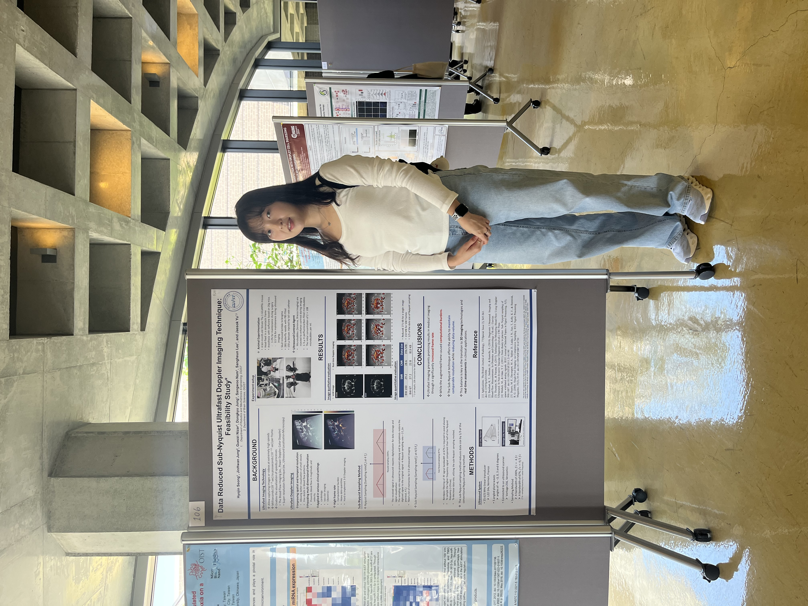
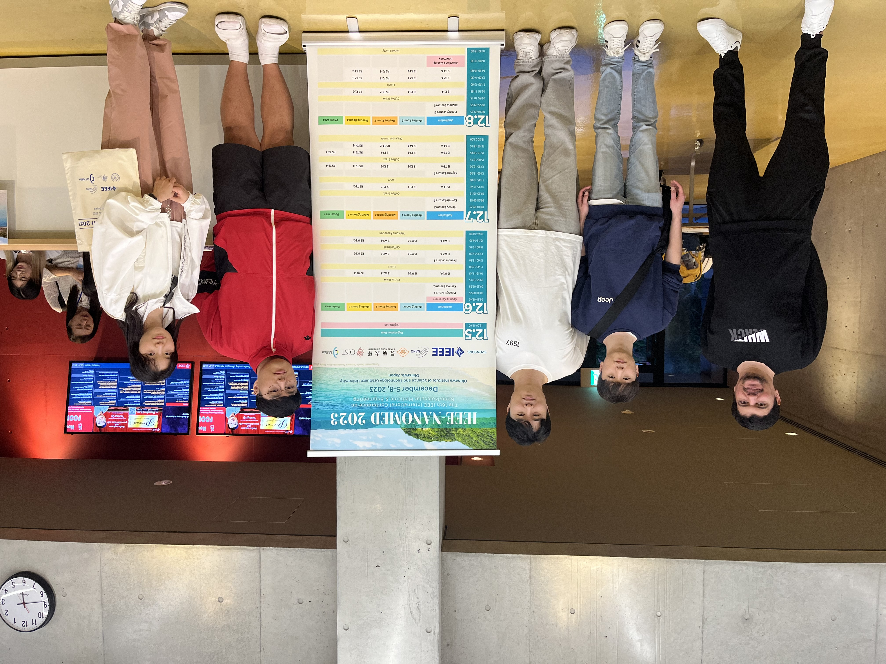
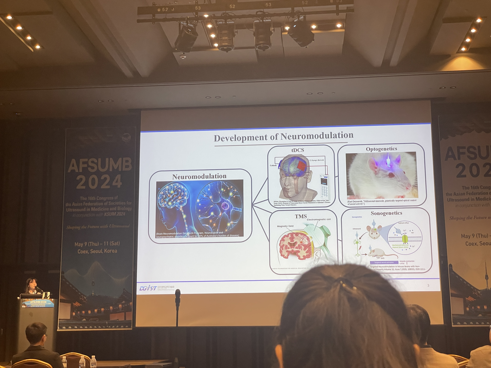
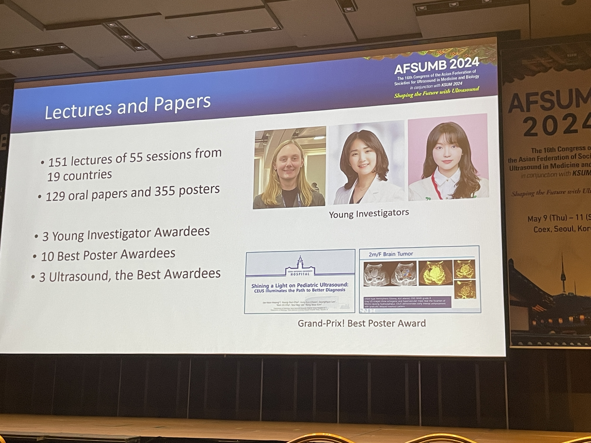

HYOJIN seong
Languages
English: -
Japanese: Daily conversation
Interests
I read a lot of books for my young age and nowadays. Through that, I gained much, including the ability to understand a person's feelings deeper, and knowledge that would be hard to know without a major. I really love music. Playing music and Listening also. And reading books are my favorite when I'm in communiting. I seems like I'm indoor person, but actually I love activities. Exercising regularly and often tracking.
So if I have to do something, I usually visit cafe. Coffee is my second favorite baverage.-First is water- there is everything I love. Cafe's noise like coffee machines sound and music playing in there makes me comfortable. So I read books or programming in cafe most in my free time. Programming is always makes me happy and annoy. That's the appeal of programming to me. Somethimes It really makes me annoy but I can't stop programming.
Project

* Shared classrooms by IoT communication

* Web Crawling Project

* Diagnosis of Sleep Apnea
Experiments
Programming club
When I was freshman, I joined programming club operated by majar. So I could learn programming language C++ very systemically. I solved problems in websites and I made a simple game,spaceship is escaped by player, with Putty.
Research student of Integrated Regenerative Medicine Lab
Learn cell, cell's house to make more stable environment for cell, build house of cell by 3D printer. Movement of 3D printer is made by Labview. For more suitable nozels, made own our own nozels. Using solidworks for modeling nozels and tips
Providing programming education
Joined a program which is cooperation university and multiculture center, provide education of Aduino and 3D print modeling to multicultural children for free.
Ecodeltacity idea conpetition
Exhibit ideas on IoT systems for the newly constructed smart city. It was an opportunity to learn the latest trends and technologies that could be used urbanly.
- Won a Second Prize
Learning Circle
Learning circles helped me to learn programming systematically during the semester. I could make my own plans and study algorithms and study in the field of IoT communication.
- Won a Third Prize on 2019
September 2019 - December 2019
Han-i-um mentoring training
Participate mentoring program offered by nation, making web site for checking university's notion at a glance. Also plan to add some filters for only find information that we needed.
Conferences
International Ultrasound Symposium (IUS) 2022 - Venice, Italy
Title: Data reduction technique using sub-Nyquist sampling of band-limited RF signal and row-column addressed arrays for ultrafast 3-D ultrasound imaging applications
3D ultrasound is a promising diagnostic tool due to its non-invasive and non-ionizing nature, but its practical use and research are hindered by several limitations. One critical issue is the challenge of managing massive datasets, particularly with 3D ultrafast imaging, which captures data at rates exceeding 500 frames per second. This research introduced a novel approach involving sub-Nyquist sampling combined with a row-column addressed array (RCA) to reduce the size of data for 3D ultrafast imaging.
 NANOMED 2023 - Okinawa, Japan
Ultrasound Localization Microscopy(ULM) Brain Boold Vessel Imaging with mouse.
 AFSUMB 2024 - Seoul, Korea
Title: Data reduction skill for ultrafast imaging: Ultrasound Localization Microscopy wiht sub-Nyquist sampling method
- Won a Gold Prize
Ultrasound Localization Microscopy (ULM) utilizes ultrasound waves for high-resolution imaging. With Sub-Nyquist Sampling, data is acquired at a rate below Nyquist, speeding up the process. This method capitalizes on signal sparsity, reconstructing high-quality images efficiently. It's invaluable for real-time imaging in dynamic biological settings. The fusion of ULM and Sub-Nyquist Sampling revolutionizes ultrafast imaging capabilities.
 Education
DGIST
Daegu Gyeongbuk Institute of Science & Technology
Daegu, South Korea
Pukyong National University
Busan, South Korea
BuHeung High School
Busan, South Korea
Skills
- Making movement of 3D printer by LABVIEW
- Making 3D Model by Solidworks
- Signal processing & Digital Image processing with MATLAB
- Coopration with slack & Microsoft team & notion